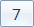

Introduction

cauto is like python's pyautogui，cauto is developed in c，now support：
- simulate keyboard click
- simulate mouse click
- mouse move
- mouse wheel
- find image position on screen
now only support windows platform
Building
- download mingw
codeblock （or codeblock with gcc compiler, codeblocks-17.12mingw-setup.exe）
- add environment variable
- run cmd
E:\git_rep\applib\cauto>gcc -version
gcc (x86_64-posix-seh-rev0, Built by MinGW-W64 project) 8.1.0
Copyright (C) 2018 Free Software Foundation, Inc.
- download source code and compile
E:\git_rep\applib\cauto>make.bat
- run test.exe
E:\git_rep\applib\cauto>test.exe
usrp 2019.12.29 10:00:39.15 debug: init
usrp 2019.12.29 10:00:39.22 debug: width: 1920 hight:1080
Usage
api is in app_api.h
key
- key press
key_down(KEY_A);
- key up
key_up(KEY_A);
- click
key_click(KEY_A);//key A
key_shift(KEY_B);//key shift + B
key_alt(KEY_A);//key alt + A
key_ctl(KEY_A);//key ctrl + A
- double click
double_click(KEY_A);
- multi click
key_clicks_mul(KEY_A, 5, 0);//click key A 5 times，interval 0 ms
- multi keys
key_num_t ctrl_k[] = {KEY_CTRL, KEY_A};
mul_keys_click(ctrl_k, sizeof(ctrl_k)/sizeof(key_num_t), 0);//interval 0 ms
/*Equivalent to*/
key_down(KEY_CTRL);
key_down(KEY_A);
key_up(KEY_A);
key_up(KEY_CTRL);
mouse
- key(same to keyboard)
- KEY_MOUSE_L(Left key)
- KEY_MOUSE_M(Middle key)
- KEY_MOUSE_R(Right key)
key_click(KEY_MOUSE_L);// click mouse's left key
- motion
Coordinate System:top left corner is(0,0), x coordinate add when go right, y coordinate add when go down.
pos_t cur;
mouse_move(100, 100);// move mouse to （x=100,y=100）
mouse_get(&cur);// get mouse's position
- wheel
mouse_wheel(100); // up 100
mouse_wheel(-100);// down 100
image
- find image
"7.bmp"
"=.bmp"
u32 cnts;
int i;
/*
find 7.bmp image ,return count and position
0.99 means similarity
NULL，find rectangle ,NULL means all screen
*/
cnts = find_img("7.bmp", 0.99, NULL);
M_INFO("cnts:%u\n", cnts);
for(i = 0; i < cnts; i ++) {
M_INFO("x:%u y:%u\n", find_res[i].x, find_res[i].y);
}
- find and click image
click_img("=.bmp", 0.99, NULL);